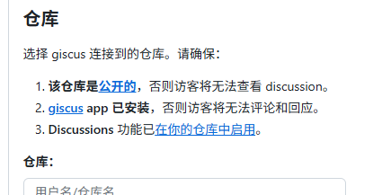
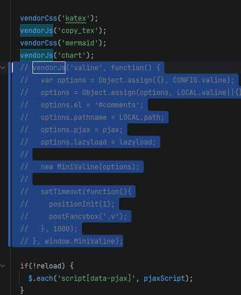

# LeanCloud 停服
尊敬的 LeanCloud 用户：
感谢您一直以来对 LeanCloud 的信任与支持。自平台上线以来，我们陪伴并见证了无数开发者的成长与创新，能与大家共同走过这十余年，我们深感荣幸。
为了团队能聚焦打造更优质的产品，经过慎重考虑，我们决定逐步停止 LeanCloud 的服务。
随着 LeanCloud 关闭，Shoka 主题的评论功能也即将失效，尽管评论功能在这里并不是很常用，但是有评论还是非常重要的，因此本文将基于 giscus 和 GitHub Discussions 实现评论功能，此评论功能将存储在博客仓库的 Discussions 之中，即便后续不使用 GitHub Page 了，评论数据依然存在（除非 GitHub 不干了或者我删库了）（？不是）
# Step 0 准备 giscus 参数
打开 https://giscus.app/ ，按页面提示选择：
你需要根据这个步骤完成：

- Repository：你的博客仓库
- Discussion Category：选一个分类（比如 “Announcements” 或你自己新建的）
- Mapping：建议选 pathname
- 页面会生成一段 <script …>，你把里面这几个值记下来：
data-repo
data-repo-id
data-category
data-category-id
# Step 1 修改 pjax.js
pjax.js 位于 themes/shoka/source/js/_app/pjax.js
-
注释 MiniValine 初始化段：siteRefresh () 中注释 vendorJs 片段（无修改下位于 L58-L72）

-
增加 giscus 挂载函数
const mountGiscus = function () {
var el = document.querySelector('#comments');
if (!el) return;
el.innerHTML = '';
var s = document.createElement('script');
s.src = 'https://giscus.app/client.js';
s.async = true;
s.crossOrigin = 'anonymous';
s.setAttribute('data-repo', '！！！这里根据实际情况填写');
s.setAttribute('data-repo-id', '！！！这里根据实际情况填写');
s.setAttribute('data-category', '！！！这里根据实际情况填写');
s.setAttribute('data-category-id', '！！！这里根据实际情况填写');
s.setAttribute('data-mapping', 'pathname');
s.setAttribute('data-strict', '0');
s.setAttribute('data-reactions-enabled', '1');
s.setAttribute('data-emit-metadata', '0');
s.setAttribute('data-input-position', 'bottom');
s.setAttribute('data-theme', 'preferred_color_scheme');
s.setAttribute('data-lang', 'zh-CN');
s.setAttribute('data-loading', 'lazy');
el.appendChild(s);
} -
新增系列主题控制函数
const getGiscusTheme = function () {
return document.documentElement.getAttribute('data-theme') === 'dark' ? 'transparent_dark' : 'light';
}const updateGiscusTheme = function () {
var iframe = document.querySelector('iframe.giscus-frame');
if (!iframe) return;
iframe.contentWindow.postMessage(
{ giscus: { setConfig: { theme: getGiscusTheme() } } },
'https://giscus.app');
}const bindGiscusThemeSync = function () {
if (window.__giscusThemeObserver) return;
window.__giscusThemeObserver = new MutationObserver(function () {
updateGiscusTheme();
});
window.__giscusThemeObserver.observe(document.documentElement, {
attributes: true,
attributeFilter: ['data-theme']
});
} -
在 siteRefresh 中的 lazyload.observe () 之上注册以上函数
mountGiscus()
bindGiscusThemeSync()
updateGiscusTheme()
# Step 2 修改 page.js
page.js 位于 themes/shoka/source/js/_app/page.js
把 loadComments () 里两处 vendorCss (‘valine’) 注释即可
# Step 3 修正评论区位置
如果你觉得现在的位置就挺好，你可以忽略此处。
# Step 3.1 修改 post.njk
post.njk 位于 themes/shoka/layout/post.njk
注释掉所有的：
{{ comment.render() }}# Step 3.2 修改 page.njk
page.njk 位于 themes/shoka/layout/page.njk
注释掉所有的：
{{ comment.render() }}# Step 3.3 修改 widgets.njk
widgets.njk 位于 themes/shoka/layout/_macro/widgets.njk
注释掉：
<ul class="leancloud-recent-comment"></ul> |
在其下面新增：
<div class="wrap" id="comments"></div> |
# Step 4 欧克了
这个时候你可以重生成一下看看。